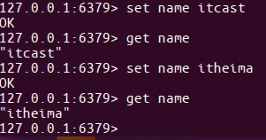

string类型
字符串类型是 Redis 中最为基础的数据存储类型，它在 Redis 中是二进制安全的，这便意味着该类型可以接受任何格式的数据，如JPEG图像数据或Json对象描述信息等。
在Redis中字符串类型的Value最多可以容纳的数据长度是512M
保存
如果设置的键不存在则为添加，如果设置的键已经存在则修改
设置键值
set key value
例1：设置键为name值为itcast的数据
set name itcast

设置键值及过期时间，以秒为单位
setex key seconds value
例2：设置键为aa值为aa过期时间为3秒的数据
setex aa 3 aa

设置多个键值
mset key1 value1 key2 value2 ...
例3：设置键为'a1'值为'python'、键为'a2'值为'java'、键为'a3'值为'c'
mset a1 python a2 java a3 c

追加值
append key value
例4：向键为a1中追加值' haha'
append 'a1' 'haha'

获取
获取：根据键获取值，如果不存在此键则返回nil
get key
例5：获取键'name'的值
get 'name'
根据多个键获取多个值
mget key1 key2 ...
例6：获取键a1、a2、a3'的值
mget a1 a2 a3

删除
详⻅下节键的操作，删除键时会将值删除